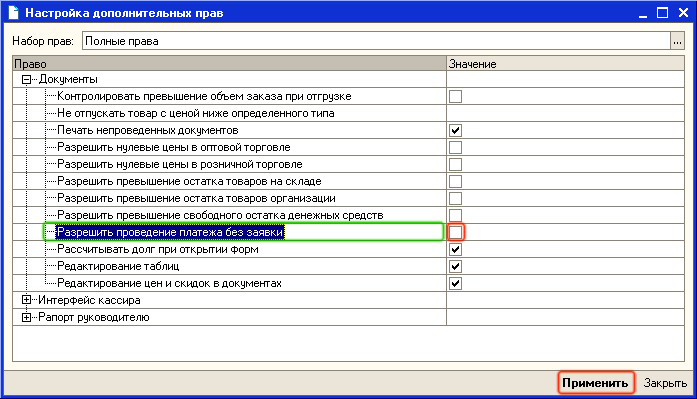
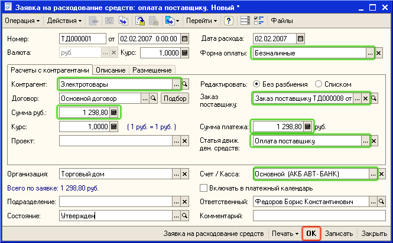

Для предварительного согласования расхода денежных средств используется документ Заявка на расходование денежных средств.
1. В настройках дополнительных прав пользователя (Сервис- Настройки дополнительных прав пользователей) уберите флаг Разрешить проведение платежа без заявки, как это показано на рисунке.

2. Откройте список документов Заявка на расходование денежных средств (в новой информационной базе список не содержит документов).
Для этого в меню Документы выберите пункт Движение денежных средств, а в нем — подпункт Заявки на расходование денежных средств.
3. Создайте новый документ Заявка на расходование денежных средств нажатием кнопки  (или нажмите клавишу Insert или выберите меню Действия — Добавить). Заполните реквизиты документа значениями так, как показано на рисунке:
(или нажмите клавишу Insert или выберите меню Действия — Добавить). Заполните реквизиты документа значениями так, как показано на рисунке:

3. В поле Заказ поставщику укажите тот заказ поставщику, по которому планируется перечислить денежные средства.
Примечание. Документ Заявка на расходование денежных средств может быть оформлен на основании документа Заказ поставщику, тогда информация о поставщике, а также сумме денежных средств, которую необходимо ему перечислить, будет заполнена автоматически.
Совет. Если необходимо согласовать расходование денежных средств по нескольким заказам поставщика, то информация об этих заказах вводится в табличную часть документа (Расшифровка платежа). Для появления табличной части в документе оплаты необходимо флаг Редактировать установить в положение Списком.
4. Проведите заявку, нажав на кнопку  . Затем заявку можно распечатать и передать ее на согласование. После согласования и утверждения в заявке устанавливается Состояние - Утвержден.
. Затем заявку можно распечатать и передать ее на согласование. После согласования и утверждения в заявке устанавливается Состояние - Утвержден.
5. На основании заявки после ее утверждения можно ввести документ Платежное поручение исходящее оформить перечисление денежных средств поставщику.
Только что Вы научились оформлять расход денежных средств по предварительной заявке. Из следующего раздела Вы узнаете как назначать цены клиентам торгового предприятия.
Следующий раздел: «Установка цен клиентам торгового предприятия»